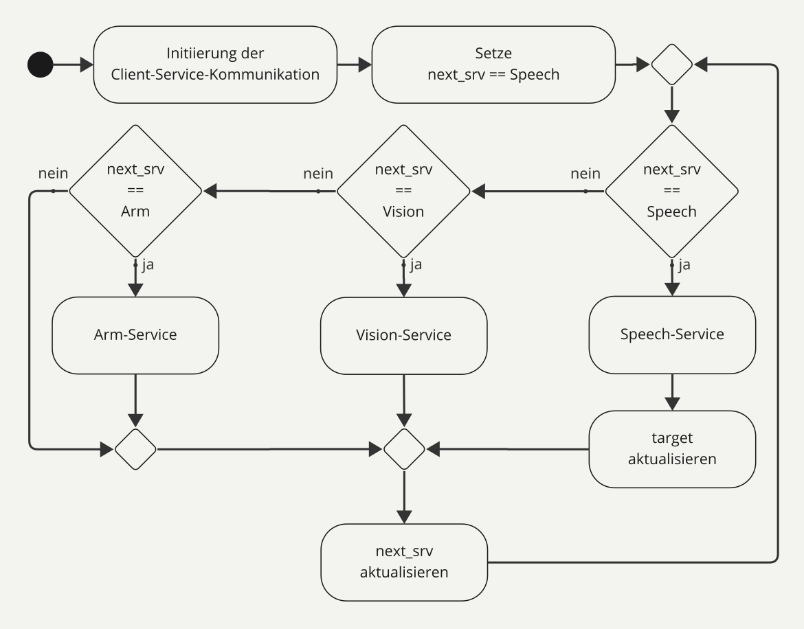
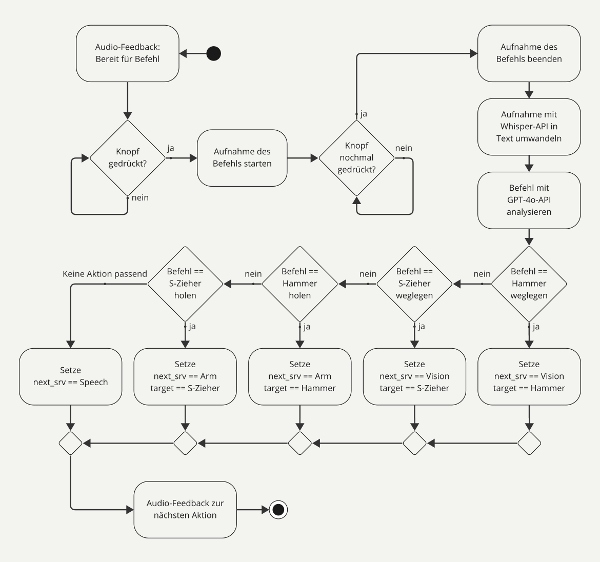
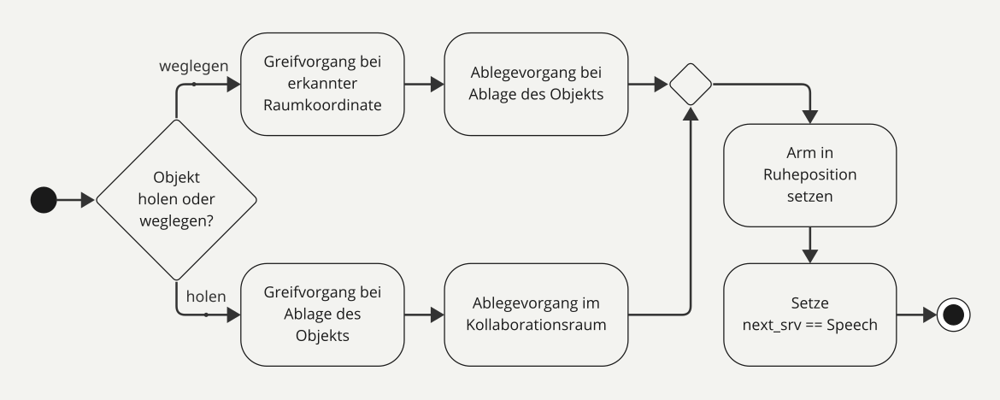

04/2024 - 03/2025 Service and Industry Robotics Course at TH Köln
Voice-Controlled Cobot System
A collaborative robot that understands spoken requests, finds the requested tool and fetches or stows it in a shared workspace.
01 / Interaction concept
Ask for a tool. The robot handles the rest.
The interaction was designed around a simple user experience: a person asks for a tool by voice, the system identifies the request, locates the object and commands the robotic arm to fetch it. The same system can also stow tools again, allowing the robot and user to work in a shared space without a conventional interface.

02 / Working prototype
Connecting speech, perception and manipulation.
The prototype connected speech processing, object detection and robotic manipulation into one working system. A central ROS 2 manager coordinated the complete sequence from spoken request through perception to tool hand-over.

03 / System architecture
A ROS 2 manager coordinating three services.
The software was organised as a ROS 2 service-based architecture. A central manager client coordinated three specialised services — Speech, Vision and Arm — and controlled the overall sequence of the interaction.

04 / Speech, vision and arm
Breaking the interaction into specialised subsystems.

Speech
The speech service handled recording and transcription before matching the spoken request to an intended command. The pipeline connected speech-to-text, language-based command interpretation and text-to-speech for hands-free interaction.

Vision
The vision service used oriented object detection to identify tools and provide their spatial position for manipulation. Through iterative training, the YOLO11-OBB model reached approximately 81% mAP50–95.

Arm
The arm service executed fetching and stowing routines. When orientation constraints caused problems with MoveIt, I derived closed-form inverse kinematics for the 4-DOF arm so the required poses could be reached reliably.
05 / Engineering result
One interaction, several robotics disciplines.
The final prototype accepted spoken tool requests, located the requested object and fetched or stowed it through a coordinated ROS 2 workflow.
Outcome
Speech, vision and manipulation were integrated into one working tool-handling system.